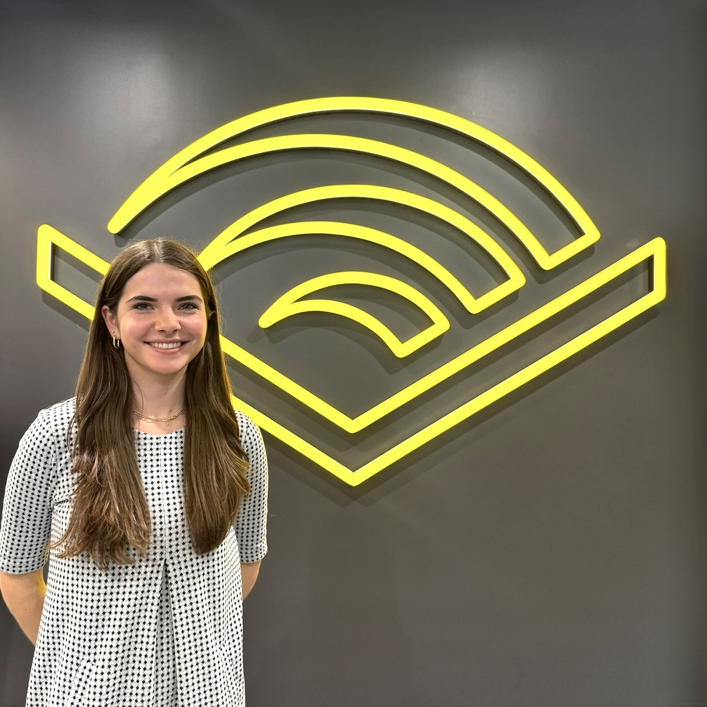
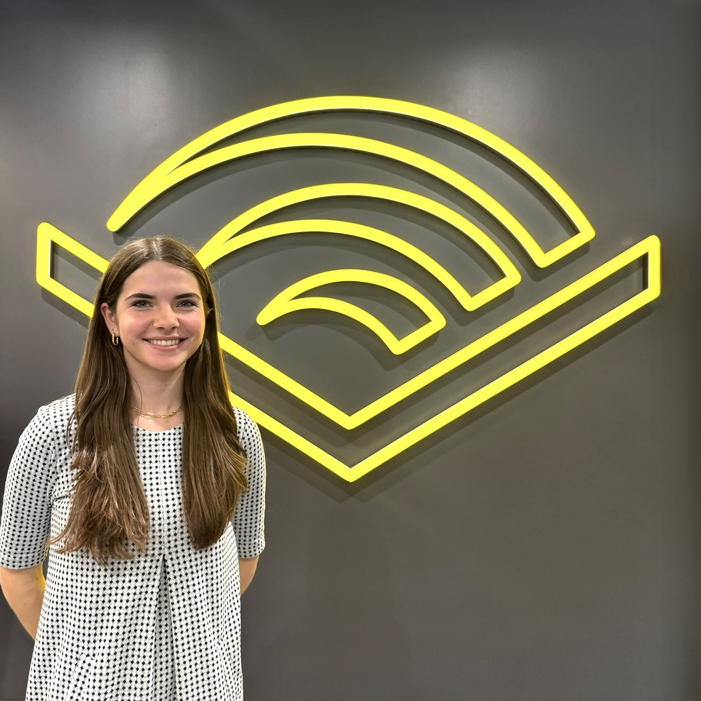

I am a full stack developer and systems enthusiast passionate about accessibility and privacy.
Hi, I’m Sarah! I’m a junior at Brown University studying computer science with focuses on systems and design. I'm originally from Durham, North Carolina.
I believe in building systems and interfaces that prioritize the needs of users, particularly through accessible features and privacy-preserving guardrails.
Outside of classes, I’m part of the ETOS group at Brown with Professor Malte Schwarzkopf, where I currently research privacy and security for LLM/chatbot applications.
Previously, I was a coauthor on Sesame: End to End Privacy Compliance with Policy Containers and Privacy Regions. This system uses the guarantees of the Rust type system to wrap user data in policies that restrict how developers access it. Sesame was accepted to SOSP 2024, and I travelled with the team to present the poster for the paper and support our PI's talk.
During my summers in college, I have expanded my programming and design skills through technical internships. For summer 2025, I will be a Software Engineer Intern at Microsoft.
In the summer of 2024, I interned at Audible on a backend services team. My internship project focused on upgrading two pipelines to CI/CD by building integration test suites.
In 2023, I interned at Pearson on a Site Reliability team, where I first encoutered cloud computing and earned my AWS Cloud Practitioner Certification. For my project, I built a chatbot with access to proprietary data for Pearson employees.
 
